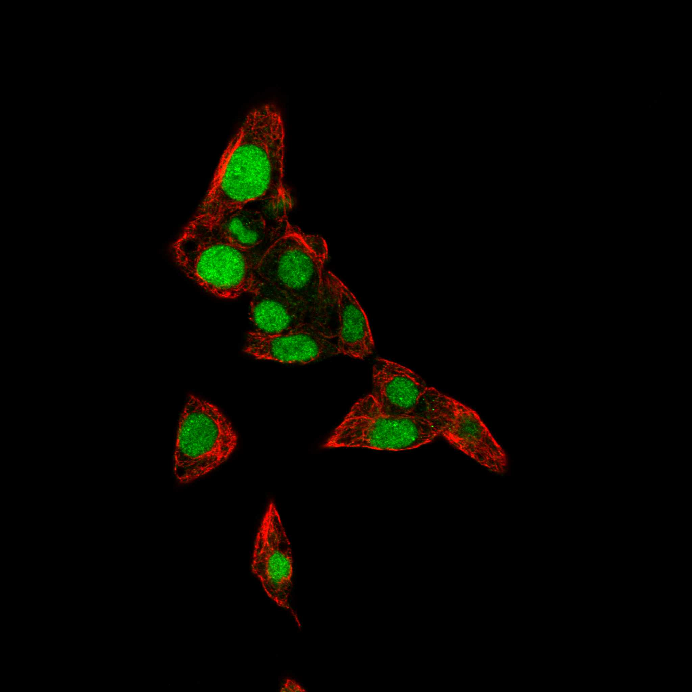

type: protein-evaluation gene: "ASF1A" date: 2026-06-01 tags: [protein-scout, chromatin, evaluation] status: scored ---
ASF1A 核蛋白评估报告
1. 基本信息
| 项目 | 内容 |
|---|---|
| 基因名 / 别名 | ASF1A |
| 蛋白全名 | Histone chaperone ASF1A |
| 蛋白大小 | 204 aa / 23.0 kDa |
| UniProt ID | Q9Y294 |
2. 评分总览
| 维度 | 得分 | 新权重 | 加权后 | 关键证据摘要 |
|---|---|---|---|---|
| 核定位特异性 | 9/10 | x4 | 36.0 | UniProt Nucleus; Chromosome, HPA Nucleoplasm（纯核质） |
| 蛋白大小 | 10/10 | x1 | 10.0 | 204 aa, 23.0 kDa，极小 |
| 研究新颖性 | 4/10 | x5 | 20.0 | PubMed strict=62 (≤80 区间) |
| 三维结构 | 9/10 | x3 | 27.0 | PDB 20 entries (X-ray+NMR+EM), AF pLDDT 84.1, >90=74.0% |
| 调控结构域 | 9/10 | x2 | 18.0 | Histone chaperone ASF1 domain，直接结合 H3/H4，HIRA 伴侣 |
| PPI 网络 | 8/10 | x3 | 24.0 | STRING UBN1 0.999, HIRA 0.999, H3-3B 0.999, TLK2 0.997, CABIN1 0.998 |
| 加权总分 | 135/180** | |||
| 互证加分 | +1.0 | PDB 20 entries + chromatin 特异性 | ||
| 归一化总分 (÷1.83) | 73.8/100** |
3. 详细分析
3.1 核定位证据
| 来源 | 定位 | 可信度 |
|---|---|---|
| UniProt Subcellular Location | Nucleus (ECO:0000269 x2); Chromosome (ECO:0000269) | 高（实验证据） |
| GO-CC | chromatin (IDA:UniProtKB), nucleoplasm (IDA:HPA), nucleus (IDA:LIFEdb), site of double-strand break (IDA:UniProt) | 高 |
| HPA IF | Nucleoplasm (Enhanced 可靠性) | 高 |
| Literature | ASF1A 是复制非依赖性染色质组装的核心伴侣（与 HIRA 协同），参与 DSB 修复和 SAHF 形成 | 强 |
HPA IF 状态: IF available -- HPA 可靠性 Enhanced，定位 Nucleoplasm（纯核质）。

结论: ASF1A 是组蛋白 H3/H4 伴侣，核质定位（含染色质区域）明确。UniProt 三条实验证据（Nucleus + Chromosome），GO-CC 多源 IDA 支持。HPA Enhanced 纯 Nucleoplasm。参与 DSB 位点的组蛋白替换和衰老相关异染色质 foci (SAHF) 形成。
3.2 结构与数据源
| 指标 | 数值 |
|---|---|
| AlphaFold | AF-Q9Y294-F1 |
| 平均 pLDDT | 84.1 |
| pLDDT >90 | 74.0% |
| pLDDT 70-90 | 2.0% |
| pLDDT <50 | 17.6% |
| PDB | 20 entries (1TEY NMR, 2I32 2.70A X-ray, 2IIJ NMR, 2IO5 2.70A, 3AAD 3.30A, 5C3I 3.50A, 6F0F 2.00A, 6F0G 2.30A, 6F0H 1.98A, 6ZUF 1.80A, 7LNY 2.10A, 7LO0 2.71A, 7V6Q 3.00A, 8BV1 2.83A, 8CJ1 2.56A, 8CJ2 2.13A, 8CJ3 3.00A, 8Z50 2.80A, 9CVC 3.50A EM, 9IMZ 3.75A EM) |
ASF1A 是本批次结构信息最丰富的蛋白：20 个 PDB 实验结构，涵盖 X-ray、NMR 和 Cryo-EM，最高分辨率 1.80A (6ZUF)。AF pLDDT 84.1。核心 ASF1 domain (1-156 aa) 结构明确，C 端 ~48 aa 含部分无序区。
| InterPro | Pfam |
|---|---|
| IPR006818 (ASF1-like histone chaperone), IPR036747 (ASF1-like superfamily) | PF04729 (ASF1_hist_chap) |
染色质调控潜力: ASF1A 是 HIRA 介导的复制非依赖性（RI）染色质组装的核心组蛋白伴侣。直接结合新合成的 H3-H4 二聚体（H3K9me1K14ac + H4K5K12ac），在 DSB 修复中促进组蛋白替换和 RAD51 加载。参与 SAHF 形成和细胞衰老。TLK1/TLK2 磷酸化调控。
3.3 研究现状
| 指标 | 数值 |
|---|---|
| PubMed strict (Title/Abstract) | 62 |
| PubMed broad | 164 |
| 别名 | 无 |
关键文献：
- PMID:29478807: ASF1A 在停滞/崩溃复制叉处促进同源重组修复 DSB
- PMID:15621527: ASF1A 为衰老相关异染色质 foci (SAHF) 形成和细胞周期退出必需
- PMID:40091041: "Mechanism of ASF1 engagement by CDAN1." (Nat Commun, 2025)
- PMID:39027248: "ASF1A-dependent P300-mediated histone H3 lysine 18 lactylation promotes atherosclerosis by regulating EndMT." (Acta Pharm Sin B, 2024)
- PMID:38498025: "The TLK-ASF1 histone chaperone pathway plays a critical role in IL-1beta-mediated AML progression." (Blood, 2024)
3.4 PPI 网络（三源综合）
| Partner | Source | Score/Evidence | Relevance |
|---|---|---|---|
| UBN1 | STRING | 0.999 (exp 0.835) | HIRA complex 组分 |
| HIRA | STRING | 0.999 (exp 0.997) | RI 染色质组装 |
| H3-3B | STRING | 0.999 (exp 0.987) | 组蛋白 H3.3 |
| CABIN1 | STRING | 0.998 (exp 0.820) | HIRA complex |
| TLK2 | STRING | 0.997 (exp 0.985) | 磷酸化激酶 |
| NASP | STRING | 0.995 (exp 0.966) | 组蛋白伴侣 |
| MCM2 | STRING | 0.992 (exp 0.985) | 复制/修复 |
| CHAF1B | STRING | 0.988 (exp 0.937) | CAF-1 (偶联复制和 RI 通路) |
| TLK1 | IntAct | Y2H (PMID:16189514) | 磷酸化激酶 |
| HAT1 | IntAct | coIP (PMID:28514442) | 组蛋白乙酰转移酶 |
| NASP | IntAct | validated Y2H (PMID:32296183) | 组蛋白伴侣 |
ASF1A 的 PPI 网络以 HIRA 复合体（UBN1 + HIRA + CABIN1）为核心，介导复制非依赖性染色质组装。与 TLK1/TLK2 磷酸化调控通路紧密连接。NASP 和 HAT1 共同参与组蛋白代谢。MCM2 和 CHAF1B 连接至复制偶联通路，显示 ASF1A 在复制和非复制染色质组装间的枢纽作用。
4. 总体评价
ASF1A 是组蛋白伴侣家族的旗舰蛋白。核心优势：纯核质定位（HPA Enhanced）、极小蛋白（204 aa）、20 个 PDB 结构（X-ray/NMR/EM，最高 1.80A）、STRONG PPI（HIRA 复合体 + TLK 通路）、直接的染色质组装功能。主要劣势是 PubMed 62（新颖性 4/10），研究热度中等偏高。与 ASF1B 高度同源但功能分工清晰（ASF1A = RI 染色质组装 + DSB 修复 + SAHF；ASF1B = 复制偶联染色质组装）。作为染色质组装和衰老调控的关键因子，是优秀的结构功能研究靶点。
5. 数据来源
- UniProt: https://www.uniprot.org/uniprotkb/Q9Y294
- AlphaFold: https://alphafold.ebi.ac.uk/entry/Q9Y294
- PubMed: https://pubmed.ncbi.nlm.nih.gov/?term=ASF1A
- Protein Atlas: https://www.proteinatlas.org/ENSG00000111875-ASF1A
HPA IF 图像已本地嵌入。
PAE 图像说明: AlphaFold PAE 图像已重新获取并嵌入（见下方 PAE 图像修正块）；结构判断仍结合 pLDDT 与 PAE 综合判断。
<!-- AF_PAE_REPAIR_START --> PAE 图像修正（2026-06-05）: AlphaFold 提供 predicted aligned error 图像；此前“PAE 图像暂无数据”的表述为未获取/未嵌入导致。

<!-- DOMAIN_HUMANPPI_REPAIR_START -->
Domain/SMART 与 humanPPI 补充（2026-06-06）
SMART / UniProt domain
| Source | Data |
|---|---|
| UniProt | Q9Y294 |
| SMART | 未在 UniProt xref 中检出 SMART 条目 |
| UniProt Domain [FT] | 未检出显式 UniProt Domain feature |
| InterPro | IPR006818;IPR036747; |
| Pfam | PF04729; |
humanPPI / HPA Interaction
Source: https://www.proteinatlas.org/ENSG00000111875-ASF1A/interaction
| Partner | Datasets | AF3/HPA structure |
|---|---|---|
| CABIN1 | Biogrid, Bioplex | true |
| CDAN1 | Biogrid, Bioplex | true |
| CHAF1B | Intact, Biogrid | true |
| H3-3A | Biogrid, Bioplex | true |
| H3C1 | Biogrid, Bioplex | true |
| H3C3 | Biogrid, Bioplex | true |
| H3C6 | Biogrid, Bioplex | true |
| H4C1 | Intact, Biogrid, Bioplex | true |
<!-- DOMAIN_HUMANPPI_REPAIR_END -->